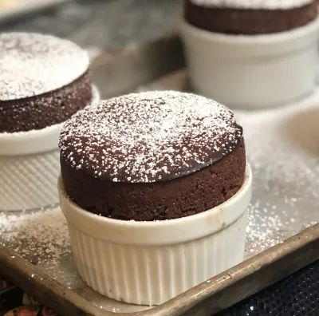

Chocolate soufflé

This easy-to-follow recipe will guarantee light, fluffy and chocolaty soufflés for your loved ones
Ingredients:
- 1 tbsp unsalted butter, melted
- 25g golden caster sugar, plus 1 tbsp
- 75g best-quality dark chocolate (70% cocoa solids), chopped
- 50ml double cream
- 50ml whole milk
- 2 eggs, separated
- icing sugar, for dusting
- pouring cream, to serve
Steps:
- Heat the oven to 220C/fan 200C/gas 7.
Butter four 150-200ml ramekins, dust the insides with 1 tbsp of caster sugar, then tip out the remaining sugar.
- Warm the dark chocolate, cream and milk in a small pan and over a low heat, stirring until glossy and melted.
Remove from the heat.
- Whisk the egg whites with an electric whisk until soft peaks form, then add the sugar a teaspoon at a time until stiff peaks form.
Whisk the egg yolks with the cooled melted chocolate until combined. Stir a little of the egg whites into the yolk mixture to loosen,
then carefully fold in the remaining egg whites until uniform in colour.
- Spoon into the ramekins, run a knife around the rims of the soufflés, then bake for 10-14 minutes or until well risen
– don’t open the oven door until 10 minutes is up.
- Dust with the icing sugar, if you like, make a well in the middle and pour in the cream.